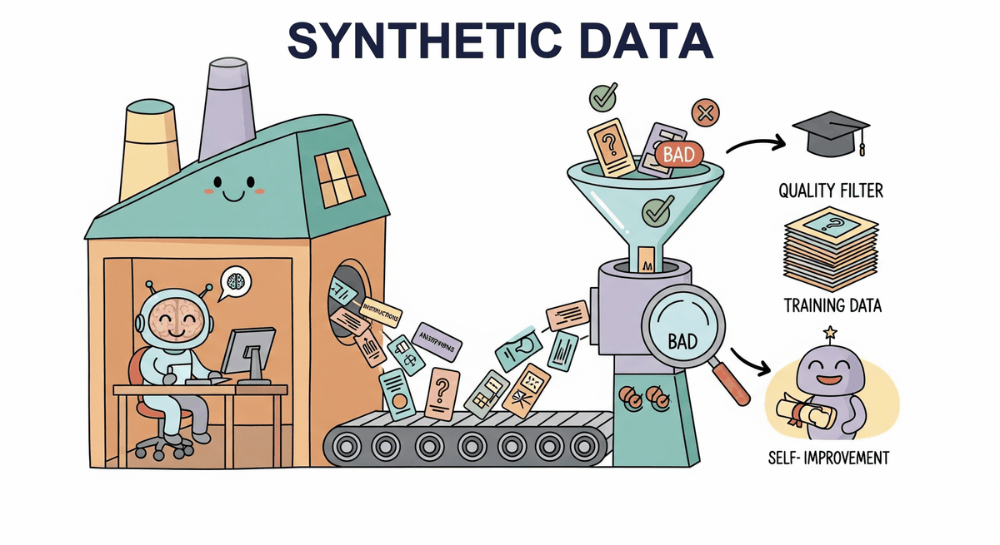

"The map is not the territory, but a sufficiently detailed map can teach you to navigate it."
Synth, Cartographically Inclined AI Agent

Part III used LLMs as they came from the lab. Part IV is where you adapt them. The first prerequisite for adaptation is data, and the field has discovered that synthetic data, generated by larger models, can replace huge fractions of human-labeled data. This chapter covers Self-Instruct, Evol-Instruct, Magpie, distillation pipelines, and the quality controls that prevent synthetic data from poisoning your model.
Chapter Overview
High quality training data is the single most important ingredient for building effective language models and ML systems, as we saw when examining pretraining data requirements in Chapter 06. Yet acquiring labeled data through traditional human annotation is slow, expensive, and difficult to scale. Synthetic data generation, powered by LLMs, has emerged as a transformative approach that can produce diverse, task-specific datasets at a fraction of the cost and time required for manual collection.
This chapter covers the full lifecycle of synthetic data: from foundational principles and generation pipelines through quality assurance, LLM-assisted labeling, and weak supervision. You will learn how to use LLMs as simulators to generate realistic user interactions, build automated red-teaming datasets, create evaluation harnesses, and construct preference pairs for reinforcement learning from human feedback (RLHF, covered in Chapter 20). Equally important, you will learn the risks: model collapse from training on synthetic outputs, bias amplification, and data contamination.
By the end of this chapter, you will be able to design end-to-end data generation pipelines, implement quality filtering and deduplication strategies, combine LLM labels with human oversight through active learning, and apply weak supervision to create large labeled datasets programmatically. These skills form the essential foundation for the fine-tuning and parameter-efficient adaptation chapters that follow.
High-quality training data is the bottleneck for most fine-tuning projects. This chapter teaches you to generate, filter, and validate synthetic data using LLMs themselves, a technique that directly enables the fine-tuning workflows in Chapters 14 and 15 and the alignment pipelines in Chapter 20.
Learning Objectives
- Explain the motivations, benefits, and risks of synthetic data generation, including model collapse, bias amplification, and data contamination
- Build LLM-powered data generation pipelines using Self-Instruct, Evol-Instruct, and persona-driven techniques (building on Chapter 14's prompt engineering foundations) to create instruction-response pairs, conversations, and preference data
- Use LLMs as simulators to generate synthetic users, red-teaming scenarios, evaluation test sets, and A/B testing data
- Implement automated quality assurance workflows using LLM-as-judge scoring, deduplication (exact, near-duplicate, semantic), and multi-dimensional filtering
- Design LLM-assisted labeling workflows with confidence-based routing, active learning, and human-in-the-loop verification using tools like Argilla and Label Studio
- Apply weak supervision and programmatic labeling with labeling functions, label aggregation models, and cost-quality tradeoff analysis
- Integrate open-source tools such as Distilabel, Argilla, and Snorkel into production data pipelines
- Generate synthetic reasoning traces and chain-of-thought data for training reasoning model capabilities, including verification and filtering of reasoning chains
- Apply data augmentation techniques (EDA, back-translation, LLM-powered paraphrasing) to expand small datasets while preserving label accuracy
- Evaluate the quality dimensions of synthetic datasets: diversity, accuracy, consistency, and naturalness, preparing data for fine-tuning (Chapter 18) and alignment (Chapter 20)
Prerequisites
- Chapter 13: LLM APIs and Tooling (API calls, structured outputs, batching)
- Chapter 14: Prompt Engineering (few-shot prompting, system prompts, output formatting)
- Chapter 15: Hybrid ML+LLM Architectures (LLM-as-judge, cost modeling)
- Familiarity with Python, pandas, and basic ML evaluation metrics
- Understanding of classification, labeling, and annotation concepts
Sections
- 14.1 Principles of Synthetic Data Generation Why synthetic data matters: cost, privacy, coverage, and scale. Types of synthetic data (instruction, conversation, preference, domain). Quality dimensions, risks of model collapse and bias amplification, and legal/ethical considerations.
- 14.2 LLM-Powered Data Generation Pipelines Self-Instruct and Evol-Instruct techniques for automated dataset creation. Instruction-response pair generation, multi-turn conversation synthesis, persona-driven strategies, and preference/ranking data for RLHF.
- 14.3 Quality Assurance & Data Curation Automated quality scoring with LLM-as-judge, deduplication strategies (exact, near-duplicate, semantic), filtering by length, language, toxicity, and topic. Tools: Argilla for labeling, Distilabel for pipelines.
- 14.4 LLM-Assisted Labeling & Active Learning LLM pre-labeling for annotation speedup, confidence-based routing to human reviewers, active learning with uncertainty and diversity sampling, annotation tools (Label Studio, Prodigy, Argilla), and inter-annotator agreement metrics.
- 14.5 Weak Supervision & Programmatic Labeling Weak supervision fundamentals and the Snorkel paradigm. Writing labeling functions, label aggregation models, combining weak supervision with LLM-generated labels, and cost-quality tradeoff analysis for large-scale labeling.
- 14.6 Synthetic Reasoning Data Generating synthetic reasoning traces, chain-of-thought data, math and code datasets, verification and filtering of reasoning chains, and building training data for reasoning model capabilities.
- 14.7 Data Augmentation for LLMs Classical augmentation techniques (EDA, back-translation, contextual word replacement), LLM-powered paraphrasing and attribute variation, domain-specific augmentation strategies for low-resource languages and task types, and quality control for augmented data.
What's Next?
In the next chapter, Chapter 18: Fine-Tuning Fundamentals, we cover when and how to fine-tune LLMs, from data preparation to training strategies.